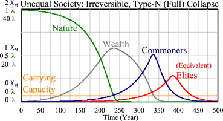

3 Resilience
3.1 De-complexification
King Abstract
Human civilisation has undergone a continuous trajectory of rising sociopolitical com- plexity since its inception; a trend which has undergone a dramatic recent acceleration. This phe- nomenon has resulted in increasingly severe perturbation of the Earth System, manifesting recently as global-scale effects such as climate change. These effects create an increased risk of a global ‘de- complexification’ (collapse) event in which complexity could undergo widespread reversal. ‘Nodes of persisting complexity’ are geographical locations which may experience lesser effects from ‘de- complexification’ due to having ‘favourable starting conditions’ that may allow the retention of a degree of complexity. A shortlist of nations (New Zealand, Iceland, the United Kingdom, Australia and Ireland) were identified and qualitatively analysed in detail to ascertain their potential to form ‘nodes of persisting complexity’ (New Zealand is identified as having the greatest potential). The analysis outputs are applied to identify insights for enhancing resilience to ‘de-complexification’.
King Memo
The globe-spanning, energy-intensive industrial civilisation that characterises the modern era represents an anomalous situation when it is considered against the majority of human history.
The major shift resulting from the spread of agriculture led to consistent energetic and material surpluses which, in turn, allowed for the establishment of fixed urban settlements, hierarchal societies and organisational complexity such as labour specialisation. The emergence of these phenomena set in motion enhancing feedback mechanisms (e.g., food surpluses) that led to increasing populations and the spatial expansion of agriculture and human activity over the majority of the Earth.
The growth of the extent and complexity of human civilisation continued for centuries but was ultimately constrained by reliance on natural flows of energy (primarily insolation captured through photosynthesis and the availability of biomass in which it was stored) and the application of human/animal muscle power to utilise energy and material resources. Overcoming this limit commenced from approximately 1800 (the start of the Industrial Revolution) through the large-scale exploitation of the very large energy stock contained within fossil carbon deposits using newly developed technologies.
The global population and industrial capacity grew rapidly for approximately 150 years but achieved near-exponential growth only from approximately the middle of the 20th century. This period, characterised as the ‘Great Acceleration’, has generated the most rapid and profound of all the changes described above, resulting from the strengthening of the feedbacks initiated at the start of the Industrial Revolution.
The ‘Great Acceleration’ is characterised by substantial and ongoing increases in societal complexity and the extent and intensity of human activities across a broad spectrum of measures. The aggregate effect of this dramatic growth has been the strong and increasing perturbation of the Earth system and the biosphere, making collective human civilisation a major force acting at global scale.
From a biophysical perspective, human civilisation is a non-equilibrium thermodynamic or dissipative system that must maintain a minimum level of available exergy to avoid entropic decay and a yet higher level to permit physical growth. From the ecological economics perspective, it can be viewed as an ‘economic superorganism’ that seeks to maximise energy consumption through self-organisation at a large scale, or the ‘megamachine’ driven to ever greater size and scope by the enhancing feedbacks of capital accumulation.
The Earth System is, however, finite in spatial extent, energetic capacity and overall complexity, and the ongoing expansion of human endeavours has and will continue to result in the Earth System’s limits being exceeded and the system being moved out of equilibrium. The Earth System (characterised as ‘Gaia’) is a self-regulating mechanism [6], and observable shifts in the behaviour of Earth Systems may be manifestations of balancing feedbacks resulting from the strong and growing perturbation from human activities. These may have the potential to fundamentally undermine the agriculture-based civilisation that has flourished in benign Holocene conditions.
Four major categories of threats to the ongoing viability of the high-intensity civilisation has emerged from the ‘Great Acceleration’. These phenomena are
- encountering of limits;
- diminishment of returns;
- ecological destruction;
- ‘risk multipliers’.
The peak use rates across multiple crucial resource types shows that numerous resources had a synchrony of peak use centred on the year 2006. The phenomenon has implications in terms of the capacity of global society to adapt to physical scarcity given that limits on the availability of multiple resources may have to be managed simultaneously, and this may constrain the capacity for substitution and ‘de-coupling’ of resource use
The availability of high EROI energy sources (that provide an ‘excess’ of energy) can be linked with socioeconomic complexity and ‘higher’ societal functions (e.g., education, health care, culture) that are indicative of higher living standards. ‘Traditional’ fossil fuels have provided a high EROI value for many decades, but the decline in the quality and accessibility (and therefore EROI) of these fuels, in parallel with the generally lower net energy provided by other energy sources, could result in a reduction in global economic output and quality of life. A transition to an energy system with a high proportion of renewables may lead to an ‘energy trap’.
Application of predator–prey population dynamics models to assess the evolution of four factors (‘elites/commoners/nature/wealth’), identifies that (economic) ‘elites’ preying on resources and the labour of ‘commoners’ can lead to economic stratification and ecological strain and, ultimately, irreversible societal collapse.
Sociopolitical complexity has been fundamental to the functioning and success of human societies post the Agricultural Revolution [28] and is described as the collective problem- solving and efficiency-seeking strategies deployed by all organised human societies in re- sponse to encountering problems, constraints (e.g., energy or water) or aspirations. It may include: ‘bureaucracy’ in the form of governments; specialisation of roles, occupations and industries; new technologies; and increased mobility and trade. The sociopolitical com- plexity (hereafter complexity) provides marginal gains (i.e., net benefits) when initially deployed, but as further complexity is added, the marginal gains diminish in an inversely proportional manner. The subsequent progression through zero and then negative marginal benefit is posited as the factor consistent with societal collapses (in varied locations and time-frames) throughout history. Applying simple system dynamic models demonstrates the tendency for complexity to peak and then diminish.
The sixth extinction episode (or alternatively, the Holocene Extinction Event) is currently ongoing, meaning that Earth’s biosphere is currently under pressure at levels which occur only infrequently even over geological timescales.
The advent of the ‘Great Acceleration’. The short timescale on which these impacts have grown, along with their sheer scope and extent, has resulted in <3% of the world’s land surface area remaining as ‘fundamentally intact’, i.e., with species diversity and habitats unaffected by human activity.
The propensity for humans to destroy forest ecosystems gives a high probability (>90%) that global civilisation is very likely to suffer a catastrophic collapse in future (within a few decades).
The current extinction event also differs in that it is driven by the concurrence of phenomena unique to human actions including changes in land and sea use; direct exploitation of animals and plants; climate change; pollution; and invasive alien species. It is also characterised by unique Anthropocene features, such as the introduction of a global ‘plastics cycle’, which pose an as-yet unknown threat to the stability of global ecosystems, and by extension, complex human civilisation.
Climate change can be described as a ‘hyperobject’ [40], which are entities that have spatial and temporal scope and dimensions far beyond that of the human realm. The human system, when considered as an economic ‘superorganism’ [1,5] (a decentralised, energy-consuming structure that is emergent at global scale) may also be continuous with the ‘climate hyperobject’ given that it ‘excretes’ greenhouse gases. The self-organising tendencies of these ‘hyperobjects’, which seek growth even where biophysical limits and environmental destruction constrain them, means that the prospects for reduction and reversal of greenhouse gas emissions are limited and accelerating feed- back mechanisms have the potential to exacerbate this tendency.
The increasing hyper-connectivity of the globalised economy is a process characterised by the reduction in system resilience in favour of increased efficiency and complexity, which may increase the risk of initially small disturbances being subject to enhancing feedbacks that spread and potentially eventually create system-level threats
An alternative viewpoint is that complex, integrated societies have a natural resilience to a range of stresses and shocks, i.e., that they tend to self-correct when internal and external shocks occur (e.g., as seen in the response to the ‘Global Financial Crisis’). However, perturbation in excess of ‘tipping point’ thresholds can create propagations leading to major changes in the state of such systems.
The risks of large-scale failures due to increasing globalisation, complexification, interdependency and the speed of fundamental societal support systems (particularly in the more developed regions of the world) creates significant global risks. This is particularly acute for the proportion of the human population that is entirely reliant on systems such as automated wastewater management and industrial food production (i.e., large urban populations). Furthermore, the global system may now have moved beyond human control or understanding
The first objective of this analysis is to define and underpin a ‘shortlist’ of nations which have inherent natural and anthropogenic characteristics that in combi- nation are likely to comprise ‘favourable starting conditions’. This shortlist will need to take account of the factors that are of the greatest relevance to the potential nature of a ‘de-complexification’ event to identify which conditions may interact with such an event to give a higher probability of allowing a degree of complexity to persist. The methodology for the identification of ‘shortlisted’ nations is based around the extrapolation and further analysis of the outputs of the ‘University of Notre Dame—Global Adaptation Index’ (ND-GAIN) study. This is a study that considers a range of factors relating to the potential for climate change to disrupt different nations around the world. It gathers and processes a range of different variables to generate indicators of vulnerability to climate disruptions and readiness to mobilise adaptive actions. The overall output of the study is a combined score for each nation in the world and a ranking of nations according to proneness to climate change.
King (2021) Nodes of Persisting Complexity (pdf)
Motesharrei Abstract
There are widespread concerns that current trends in resource-use are unsustainable, but possibilities of overshoot/collapse remain controversial. Collapses have occurred frequently in history, often followed by centu- ries of economic, intellectual, and population decline. Many different natural and social phenomena have been invoked to explain specific collapses, but a general explanation remains elusive. In this paper, we build a human population dynamics model by adding accumulated wealth and economic in- equality to a predator–prey model of humans and nature. The model structure, and simulated scenarios that offer significant implications, are explained. Four equations describe the evolution of Elites, Commoners, Nature, and Wealth. The model shows Economic Stratification or Ecological Strain can independently lead to collapse, in agreement with the historical record. The measure “Carrying Capacity” is developed and its estimation is shown to be a practical means for early detec- tion of a collapse. Mechanisms leading to two types of collapses are discussed. The new dynamics of this model can also reproduce the irreversible collapses found in history. Collapse can be avoided, and population can reach a steady state at maximum carrying capacity if the rate of depletion of nature is reduced to a sustainable level and if resources are distributed equitably.

Motesharrei Memo
n this paper we attempt to model collapse mathematically in a more general way. We propose a simple model, not intended to describe actu- al individual cases, but rather to provide a general framework that allows carrying out “thought experiments” for the phenomenon of collapse and to test changes that would avoid it. This model (called HANDY, for Human and Nature DYnamics) advances beyond existing biological dynamic population models by simultaneously modeling two separate important features which seem to appear across so many societies that have collapsed: (1) the stretching of resources due to the strain placed on the ecological carrying capacity and (2) the economic stratification of society into Elites and Masses (or “Commoners”)
HANDY is based on the classical predator–prey model, the inclusion of two societal classes introduces a much richer set of dynam- ical solutions, including cycles of societal and ecological collapse, as well as the possibility of smoothly reaching equilibrium (the ecological car- rying capacity). We use Carrying Capacity in its biological definition: the population level that the resources of a particular environment can sustain over the long term.
HANDY was originally built based on the predator–prey model. We can think of the human population as the “predator”, while nature (the natural resources of the surrounding environment) can be taken as the “prey”, depleted by humans. In animal models, carrying capacity is an upper ceiling on long-term population. When the population surpasses the carrying capacity, mechanisms such as starvation or migration bring the population back down. However, in the context of human societies the population does not necessarily begin to decline upon passing the threshold of carrying capacity, because, unlike animals, humans can accumulate large surpluses (i.e., wealth) and then draw down those re- sources when production can no longer meet the needs of consumption. This introduces a different kind of delay that allows for much more com- plex dynamics, fundamentally altering the behavior and output of the model. Thus, our model adds the element of accumulated surplus not required in animal models, but which we feel is necessary for human models. We call this accumulated surplus “wealth”.
Empirically, however, this accumulated surplus is not evenly distrib- uted throughout society, but rather has been controlled by an elite. The mass of the population, while producing the wealth, is only allocated a small portion of it by elites, usually at or just above subsistence levels. Based on this, and on the historical cases discussed in the introduction, we separated the population into “Elites” and “Commoners”, and introduced a variable for accumulated wealth.
This adds a different dimension of predation whereby Elites “prey” on the production of wealth by Commoners. As a result, HANDY consists of four prediction equations: two for the two classes of population, Elites and Commoners, denoted by \(x_E\) and \(x_C\) , respectively; one for the natural resources or Nature, \(y\); and one for the accumulated Wealth, \(w\), referred to hereafter as “Wealth”. This minimal set of four equations seems to capture essential features of the human–nature interaction and is capable of producing major potential scenarios of collapse or transition to steady state.
A similar model of population and renewable resource dynamics based on the predator–prey model was developed in the pioneering work of Brander and Taylor (1998) demonstrating that reasonable parameter values can produce cyclical “feast and famine” patterns of population and resources. The BT approach only models Population and Nature and does not include a central component of these historical cases: economic stratification and the accumulation of wealth.
We have found that including economic stratification, in the form of the introduction of Elites and Commoners, as well as accumulated Wealth, results in a much richer variety of solutions, which may have a wider application across different types of societies. HANDY’s structure also allows for “irreversible” collapses, without the need to introduce an explicit critical depensation mechanism into the model.
A decline in the price of a resource is usually thought to reflect an increase in the abundance of that resource, but in fact, it often reflects that the resource is simply being extracted more rapidly.
Over the long-term, per capita resource-use has tended to rise over time despite dramatic technological advances in resource efficiency.